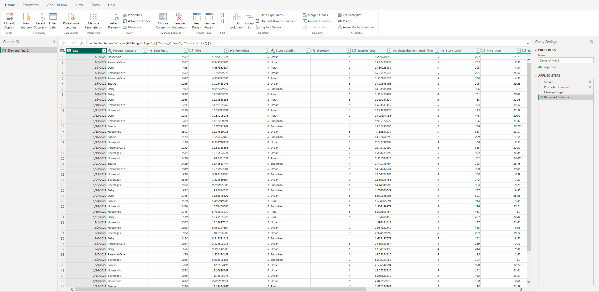
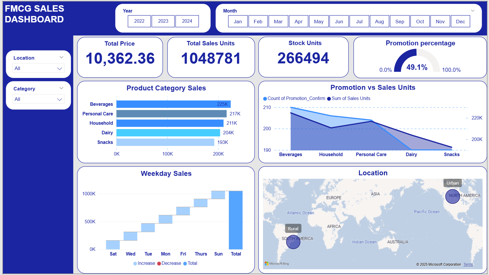

The purpose of this dashboard is to provide clear visibility into sales dynamics, enabling smarter decisions that enhance growth, streamline offerings, and elevate the company’s market standing.
Goal
The primary objective of this Dashboard is to provide a comprehensive and interactive overview of sales performance across product categories, regions, time periods, and promotional efforts. By consolidating key metrics such as total revenue, units sold, promotion impact, and regional performance, the dashboard enables stakeholders to quickly identify growth opportunities, optimize sales strategies, and make data-driven decisions to enhance market competitiveness in the FMCG sector—specifically within the coffee and related product lines.
Download from GitHub!Background Information
The dataset includes information about various FMCG categories sales. It contains attributes such as the product category, promotion, store location, stock level. Other information in the dataset includes the sales volume, prices, supplier cost, sales day and replenishment time.
Setup
The first step in the project involved data cleaning to ensure accurate analysis. This included removing any duplicate entries to avoid potential biases in the dataset. To facilitate better visualization of the data, I separated the time. Furthermore, I verified that there was no missing data and that each field had the correct data type using SQL tool.
Fig 1. This image shows the dataset after it was loaded.
These steps were essential to ensure that the data was properly formatted for analysis and would yield accurate results.
Dashboard Design and Creation
With the processed data, I created a FMCG Dashboard Overview that presents key insights on sales, prices and promotion impacts. The dashboard includes charts showing total prices, sales volume, stock units, promotion ratio, sales in each category, sales within a week and sales by location. These visualizations can help inform Sales and Marketing Departments and guide targeted efforts to increase sales volume within time and places.
Fig 2. This image shows the FMCG Dashboard.
I also added slicers to the Dashboard. These slicers allow the user to filter the data by various criteria such as time (year, month), location and category level. This provides a more dynamic and interactive user experience, allowing the user to explore the data in greater detail and gain deeper insights.
Conclusion
The FMCG Overview Dashboard created using Power BI is a powerful tool for making informed decisions about product development. It demonstrates my skills in data analysis and visualization. The skills I have acquired in this project can be applied to various industries and domains, helping organizations make data-driven decisions and achieve their goals.